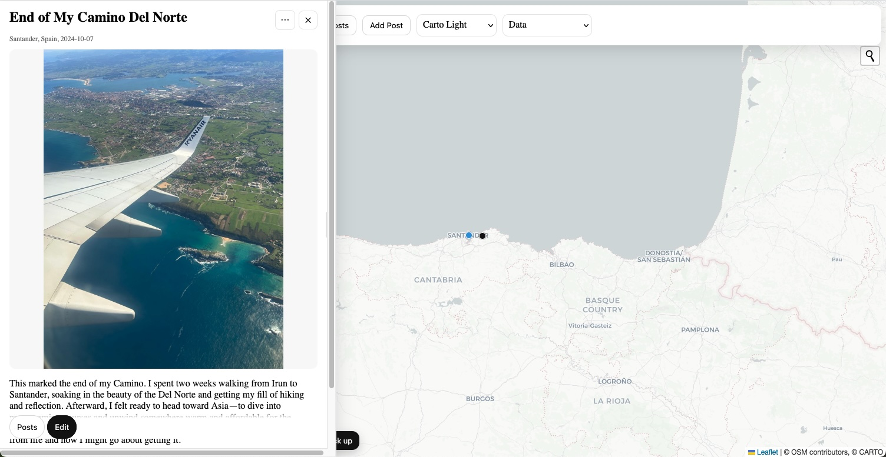

Map Blog (Beta): pin places, write stories

A tiny travel journaling app you can use right in your browser.
I once heard there are only two mistakes in life: not starting and not finishing. To fight my stack of half-finished projects, I’m putting one out there today: Map Blog (beta).
What it is
Map Blog is a simple web app for travel journaling. Drop a pin on a map, write a story or anecdote about that place, and (optionally) attach a photo. I’m using it to tell the story of the last year of nomading. I hope it’s useful for others in ways I haven't even thought about yet.
How it works (no backend yet)
- Runs entirely in your browser (built with Leaflet + vanilla JS).
- Basemaps: OpenStreetMap and Carto Positron.
- Your posts are saved to localStorage on your device—no login, no server.
- You can Export to JSON/GeoJSON and Import it later to continue where you left off.
Privacy note: Because there’s no backend, I don’t see your data. It lives in your browser until you export it.
Try it
- 💻 Best on desktop right now. Mobile is a work in progress.
- ✍️ Editable sandbox — data is saved locally; you can export a backup.
Why/when I built it
After finishing my FreeCodeCamp JavaScript certificate, I dove into this as a capstone. I’ve put ~20–25 hours in so far and plan to invest ~100 hours over the next couple months—small daily sprints while I keep learning.
What’s missing / known quirks
- No backend (yet). That means no account, no cloud sync, no shareable links.
- Mobile layout needs love; DevTools emulation ≠ real devices (who knew!).
- Large photos can bump into browser storage limits (I downscale in-browser, but it’s still possible).
Roadmap
- Lightweight backend for accounts and sync (save your map across devices).
- Shareable links and “view only” public pages.
- Tags & filters, better search, and small analytics (“posts per month,” etc.).
- D3 mini-charts inside the panel (post-by-month histogram, top tags).
- Progressive Web App (installable + offline).
Call for feedback
Please kick the tires and tell me what’s confusing, missing, or delightful: wsimon8136@gmail.com.